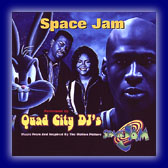

Quad City DJ's

"Space Jam," from QuadraSound/Big Beat/Atlantic recording group Quad City DJ's, again unites hit-makers Nathaniel "C.C. Lemonhead" Orange and Johnny "Jay Ski" McGowan -- the genre-breaking production team whose sizzling track record already guarantees them a place in pop music history. In 1993 the duo tapped the motherlode with an out-of-nowhere sensation called "Whoot (There It Is)" by their group 95 South. This year they repeated that success with Quad City DJ's "Ride It (The Train)," which recently became a dancefloor anthem nationwide.
Find out more about Quad City DJ's